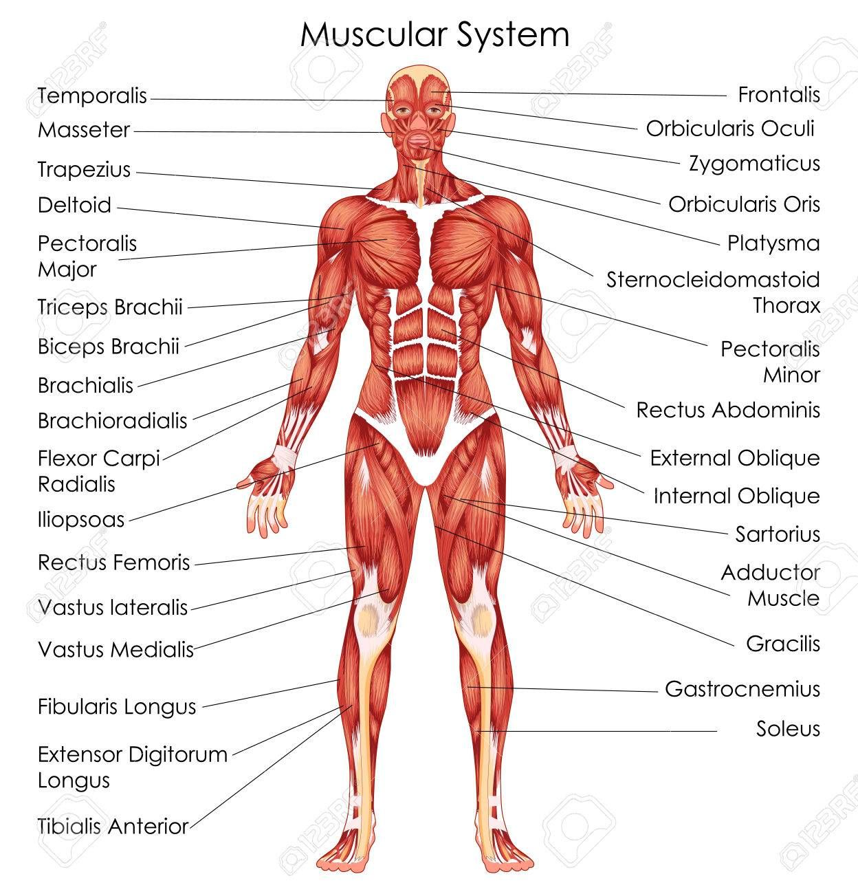

Recommended Exercises for Hypertrophy
To maximize hypertrophy, it’s essential to choose exercises that efficiently target each muscle group while allowing for progressive overload. Below is a list of key exercises by muscle group, along with tips on proper form for optimal muscle activation.
Chest
- Bench Press: Engage your chest by lowering the barbell slowly to your chest and pushing back up. Aim for 8-12 reps per set.
- Dumbbell Fly: Maintain a slight bend in your elbows as you lower the dumbbells, focusing on a stretch in the chest muscles.
Back
- Pull-Ups: Use a shoulder-width grip to target the lats. Focus on pulling through your elbows to engage the back effectively.
- Rows (Cable or Dumbbell): Keep your back straight and pull the weight to your lower chest, engaging the mid-back muscles.
Legs
- Squats: Keep your core tight and descend until your thighs are parallel to the floor. Use a controlled motion for maximum muscle activation.
- Lunges: Take a step forward and lower your back knee, ensuring that your front knee stays above your ankle.
Shoulders
- Shoulder Press: Keep the weights aligned with your shoulders, pressing upwards without locking your elbows.
- Lateral Raise: Raise dumbbells out to your sides with a slight bend in the elbows, focusing on the middle deltoids.
Arms
- Bicep Curls: Keep your elbows close to your body and avoid swinging. Squeeze at the top of the curl.
- Tricep Extensions: Extend fully to target the triceps, keeping your elbows close to your head.
